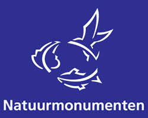
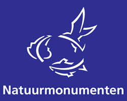
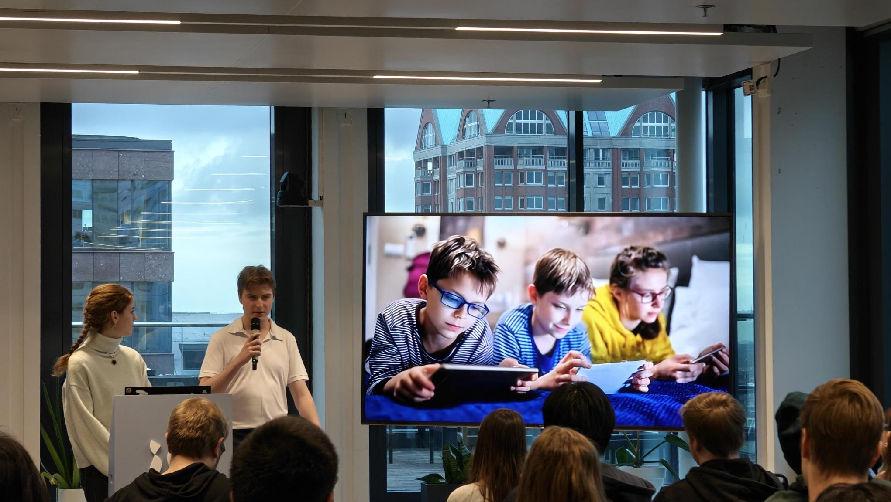

Creatief technoloog gaan kijken. Let's Go!
Hoofdstuk 1: Introductie
Ontmoet, Thomas de Korte, de hoofdrolspeler van dit verhaal dat wij gaan volgen. En laten we dan gauw een kijkje nemen in de wereld van Thomas.
Hoofdstuk 2: TLE-1
Het concept van TLE is voor onze hoofdrolspeler was een nieuwe uitdaging.
Aan het begin van TLE-1 leerde hij veel over het onderzoek doen en had het voordeel
dat hij zijn teamgenoot, Daniel Tran, al goed kende.
De eerste week was dan ook de design-week. "Hey dat vind ik leuk!".
Dacht Thomas dan, en had hij veel zin in dit nieuwe concept genaamd TLE.
Naar mate dat er meerdere methodes werden opgeschoteld zoals Trend onderzoek,
User journeys en allerlei soorten regels waaraan hij zich moest gaan houden. Werd Het
minder.
"Maar natuurlijk hoort dat er allemaal bij" dacht Thomas dan, en probeerde door te
brainstormen naar een concept waarmee hij en zijn teamgenoot blij mee zijn.
Nadat ze het eens waren was het tijd om de doelgroep er bij te betrekken. Het interviewen van de doelgroep roepte een nieuwe ervaring op bij onze hoofdrolspeler.
Het gevoel van invloed.
Om echt met zijn eigen twee ogen te zien dat hij het leven van zijn doelgroep makkelijker
kan maken
heeft hem weer nieuwe determinatie gegeven om de gegeven tools in het TLE te herbruiken.
"Die Research through design methode... die heeft wel wat." Dacht Thomas na gebruik.
En veel later tijdens het project viel er nog een andere methode veel op voor hem.
Empathy mapping. "mooi meenemen!" Dacht hij dan.
Zo had hij aan het einde van TLE-1 weer nieuwe tools om te gebruiken in de toekomst.
Hoofdstuk 3: TLE-2
Na het harde zwoegen in TLE-1 wist Thomas ongeveer al wat het te wachten stond voor TLE2... Maar wist hij dat wel zeker?
Aan het begin van dit TLE heeft hij veel geleerd over het gebruik van AI en werd hem een nieuwe tool overhandigt. Figma. "Figma is waarschijnlijk gewoon Miro, maar dan anders" Dacht Thomas bij zichzelf, hij dacht wel veel te weten begin dit TLE zeg, maar daar werd al snel verandering in gebracht tijdens het gebruik van deze nieuwe tool.
Vervolgens gingen de groepen werken voor een echte Agency. IO en als klant Natuurmonumenten. Maar dat wist onze hoofdrolspeler helemaal niet! Om te werken voor een echte agency met echte verwachtingen was heel spannend.
 

Tijdens de deisgn weken heeft de Hoofdrol speler te maken gehad met heel veel verschillende denk en design methodes. de SPRINT week, Debriefing, Big Ideas, Solution Sketches, Storyboarding en... Crazy 8.
Sommige vielen beter in de smaak dan anderen. Maar hij zette altijd door.
En heeft natuurlijk weer een paar mooie methodes mee kunnen nemen om zo zijn
toolkit uit te kunnen breiden.
"Dat Storyboard heeft me wel echt veel geholpen bij het begrijpen van
de userjourney, die moet ik meenemen!" Dacht hij dan.
Maar ook "What the **** is Crazy 8, en hoezo moeten we in 1 minuut een heel project
idee verzinnen, dat lukt toch nooit!" Maar meer daarover later.
Na veel zwoegen in de SPRINT week was het dan eindelijk zover... Het echte project. Om dit alles uit te kunnen voeren heeft Thomas veel moeten zitten aan eerdere Programmeer kennis, maar heeft uiteindelijk toch nog een cruciale bijdrage kunnen leveren aan het team!
Tijdens deze weken moest het project-concept worden gepitched aan onze klant. Hiervoor stond Thomas altijd open om dit te doen omdat hij altijd wel zijn spraak vermogen en dialect wilt verbeteren, en dit was de ideale kans om dat te doen. "Ja hoor, ik pitch hem wel!" Dit waren ook cruciale leermomenten voor hem.
En om dit hoofdstuk af te sluiten. Uiteindelijk heeft ook Thomas het nut van de Crazy 8 gezien.
Door later in het project nogmaals voor ideeen te moeten hebben gebrainstormed stelde het team voor om de Crazy8 nogmaals op te pakken. Maar dit keer met 2 minuten. Dit beviel een stuk beter.
Hoofdstuk 4: Nachtkast Boek
Hier, dit hoofdstuk, was het meest verbazingwekkend voor onze hoofdrolspeler.
"Dit word echt heel saai waarschijnlijk". Dacht Thomas toen hij te horen
had gekregen dat hij een boek moest gaan lezen voor school. Dit had hij
al eerder gedaan op de middelbare, en wist dat dit niks voor hem was.
Maar toch waren er wel een paar boeken die hem aansproken, sommige boeken
hadden het gewoon over zijn hobbies! "Huh, misschien word het toch nog
niet zo slecht."
Zo koos hij het boek, Laws of UX 2e editie.
Dit boek ging er diep op in hoe je de ervaring van de gebruiker kan optimalizeren en aanpassen door gebruik te maken van menselijke psychologie.
Ook hieruit heeft hij weer waardevolle inzichten gehaald. waaronder een paar van die
praktijken zijn toegepast op de website waarop je je nu bevindt!
Maar toch is er een selectie van methode's die hij het beste heeft onthouden.
Het aller belangrijkste was het gebruik te maken van de menselijke pyschologie zelf.
Al ken je je doelgroep door en door kan je ze ook het beste bereiken.
Zo was er een methode genaamd: Wick's Law om minder opties te tonen.
En het Von Restroff effect is ook onthouden. Zo heeft hij veel inspiratie opgedaan
Uit het boek wat je in deze pagina terug kan vinden. Zo heb ik dus vooral van het boek
geleerd om de menselijke psychologie in mijn design toe te passen.
Hoofdstuk 5: Toekomst & Groei
Plottwist, de auteur van dit boek was ook het hoofdpersoon!! Wow!
Haha, die zag je niet aankomen he, maar ja. Ik heb een heleboel tijd gehad om te reflecteren over alles wat ik in de vorige periode's heb geleerd.
Zo gaan er veel dingen goed, maar ik heb nog veel verbeterpunten.
Mijn communicatie is altijd sterk geweest, maar daarop wil ik nog altijd verbeteren
en mijn bijdrage's in de projecten was ook cruciaal. (ookal heb ik te horen
gekregen dat mijn feitjes het niet doen in het eindproduct.. maar voor mij doen ze
het wel op de server..)
In ieder geval! Ik moet strenger voor mezelf zijn om meer betrokken te zijn met de functionaliteit van het project. De styling vind ik altijd het leukste, maar om uit mijn comfort zone te stappen is ook erg belangrijk.
Zo moet ik dus ook mijn zwaktepunten aan pakken wat vooral voor mij perfectionisme is. De retrospectives hebben mij hier ook goed op gewezen en ik zal dit gaan aanpakken door mijn teamgenoten een huidige versie te geven van wat ik aan het doen ben, zonder dat hij helemaal af moet zijn zodat ze mij eventueel tips kunnen geven of laten weten dat er iets aan verandert moet worden. De SMART methode gaat hier zeker ook bij worden betrokken.
Hoofdstuk 6: Wrap-Up
Laten we het dan beindigen hoe ik ook dagen heb beindigt in het TLE.
Tijdens dit project heb ik gereflecteerd op de vorige periodes, en de tools die mij in die tijd zijn overhandigt. Ook heb ik het nachtkastboek gelezen en de methodes daaruit gebruikt om sommige components van deze website te maken.
Ook heb ik mezelf beter leren kennen en ga ik mijn persoonlijke sterktepunten utiliseren. En mijn zwaktepunten aanpakken.
Je moet dan ook nog 1 keer de pagina flippen om het laatste bericht te zien :)